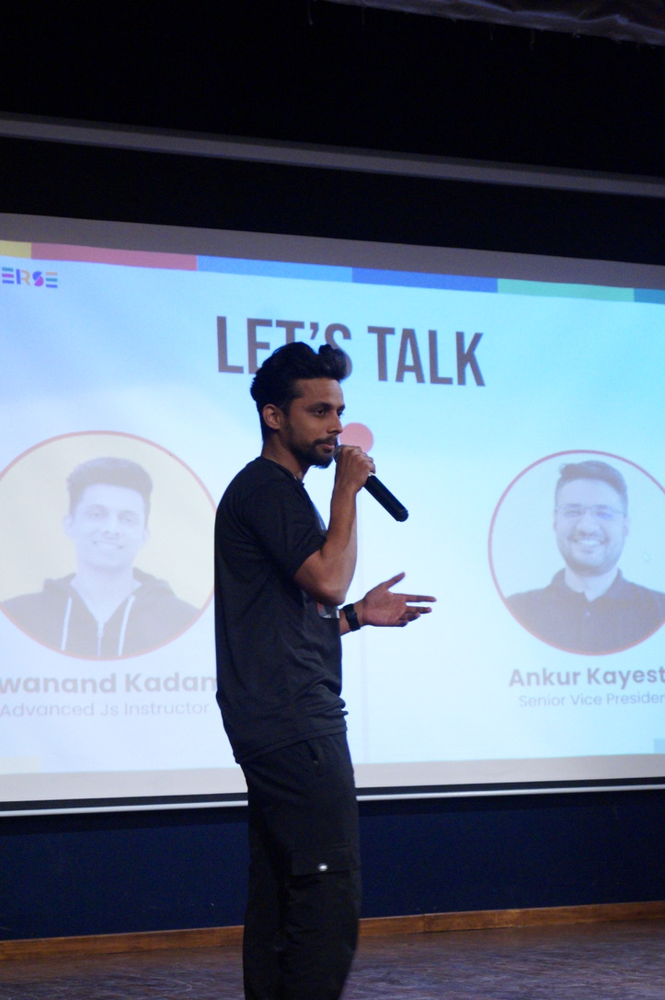

Senior Full Stack / AI Engineer · 6+ yrs · Co-founder · Pune, India
I build AI-native systems and lead engineering teams from zero to production. Multi-agent pipelines, RAG with hybrid retrieval, 19× plagiarism detection improvement, a programming language in Hindi, and a TEDx talk on why we should code in our own languages.
I'm a senior full stack and AI engineer who co-founded the01.dev, an AI-powered ed-tech platform where I led a 2-engineer team and owned architecture end-to-end. That included a PDF-to-lesson multi-agent pipeline using LangChain and Mastra with Planner-Executor and Supervisor-Worker patterns, a production RAG assistant backed by pgvector with HNSW indexing and hybrid cosine + BM25 retrieval, and an adaptive practice engine with a concept knowledge graph. Before that, I joined Masai School as one of the first engineers reporting directly to the CTO.
At Masai I built CodeMas — a real-time coding assessment platform handling 10,000 concurrent users and ~10K submissions/sec at deadline bursts via AWS Lambda + SQS + SSE. The plagiarism engine went from detecting 5% of cheating cases to 95% — a 19× lift — by reframing the problem from "are two submissions similar" to "did this student write this." I also created Kalaam, India's first Hindi programming language, which earned me a TEDx Bangalore talk ("Why we should be able to code in our own languages"), 500+ monthly users, and a 10+ contributor open-source community.
I write too. Published in Better Programming, three articles on HackerNoon, and featured on InfoQ. I care about systems that work under pressure, products that reach people who are usually left out, and open source that actually gets used.

Joined as one of the first engineers reporting directly to the CTO. Infrastructure: code submit → AWS Lambda + SQS + Docker sandbox → SSE push, sub-10s results at ~10K submissions/sec deadline bursts.
AI features — 5 agents in production:
Hand-written lexer and instruction-sequence interpreter, published as an npm package (kalaam-core), built for students who have no laptop and intermittent internet.
Co-founded and led engineering (2-person team, owned architecture end-to-end) for a deep CS fundamentals course platform.
Built and led the full engineering for a D2C e-commerce platform selling Indian cultural wall art, scaled to ₹2Cr+ in revenue. Owned architecture, payments, inventory, and delivery integrations from scratch — demonstrating that I can take a product from zero to meaningful commercial scale, not just build features.
50+ pure string functions across 9 modules: case manipulation, cleaning, formatting,
masking & security (maskEmail, maskPhone, moderate), metadata extraction (URLs, emails,
IPs, hashtags, JSON), specialized operations (Levenshtein distance, balanced brackets),
and generation. Ships as ESM with both named tree-shakeable exports and a unified
_s namespace. 19 forks.
Built as an open-source contribution platform — stub functions with Contribution Station
comments invite community PRs.
I'm open to senior full stack / AI engineering roles, consulting on LLM systems and multi-agent pipelines, and products where the problem is genuinely hard.